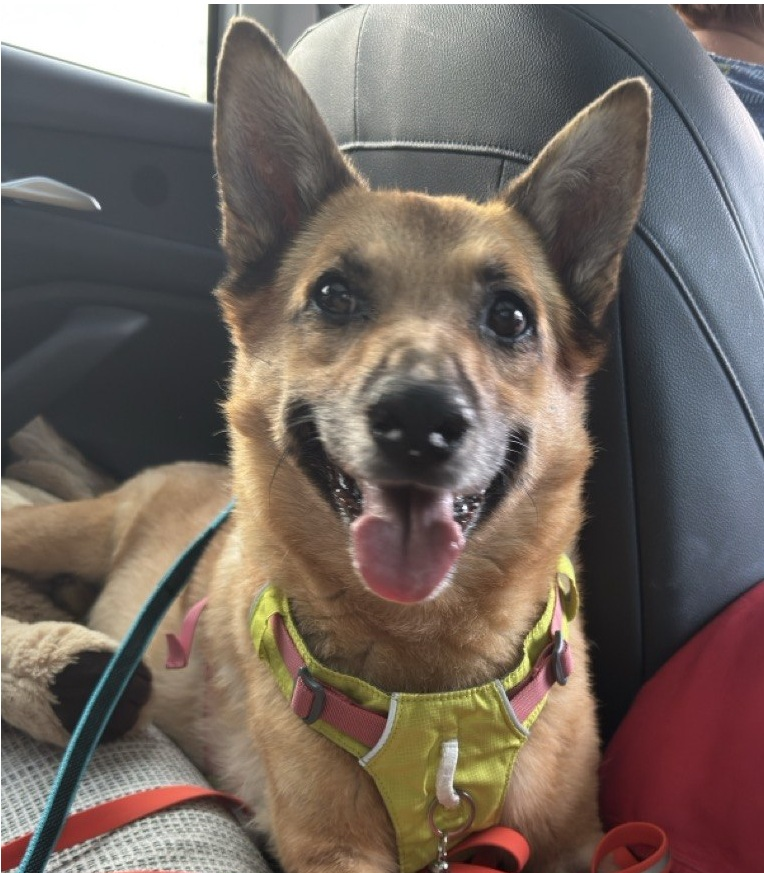

Мишлинг, 12 лет, стабильное состояние
Обновлено сегодня
15.11
22.1 кг
20.11
21.8 кг
25.11
21.5 кг
01.12
21.3 кг
07.12
21.2 кг
Сегодня
21.0 кг
~870 ккал в день
09:30
Курица 150г · Рис 100г · Морковь 50г
19:00
Говядина 150г · Гречка 100г · Тыква 50г
48% от нормы
Белок (ккал/100г):
Углеводы (ккал/100г):
Овощи/фрукты (ккал/100г):
Свой компонент (ккал/100г):
0% от дневной нормы
Активные назначения
Противовоспалительное
Гепатопротектор
Рекомендации по кормлению собак после операций и при заболеваниях ЖКТ
ПодробнееОсобенности содержания и питания собак старше 10 лет
ПодробнееПрофилактика и лечение артрита у собак крупных пород
ПодробнееКак поддерживать оптимальный вес у собаки
ПодробнееОптимальная продолжительность и частота прогулок
ПодробнееПрофилактика и раннее выявление проблем с почками
Подробнее